FlowCAP. Comparison of Automated and Manual Gating of Standardized Lyoplate Flow Cytometry Data
Flow Cytometry Software Session, Cyto 2013, San Diego, CA
Greg Finak, PhD
Staff Scientist, Vaccine and Infectious Disease Division
Fred Hutchinson Cancer Research Center, Seattle, WA
Overview
Standardization Facilitates Reproducibility and Data Comparison
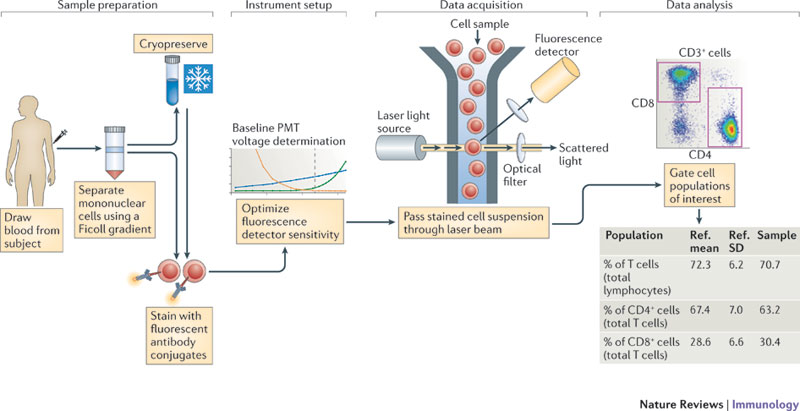
Maecker, McCoy, Nussenblatt, Nat Rev Immunol, 2012
Flow is a complex assay - many potential sources of variability.
Sample collection, preparation, staining, acquisition, instrumentation, data analysis.
Need to control as many aspects of the assay as possible.
Standardized FITMan Staining Panels Allow Comparison of Results Across Centers
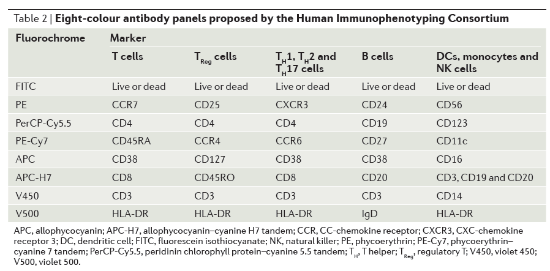
Maecker, McCoy, Nussenblatt, Nat Rev Immunol, 2012
Proposed in 2010 at FITMan meeting.
Implemented as standardized Lyoplates (96 well plates, lyophilized reagents).
Panels are Targeted at "Commonly Identified" Cell Populations.
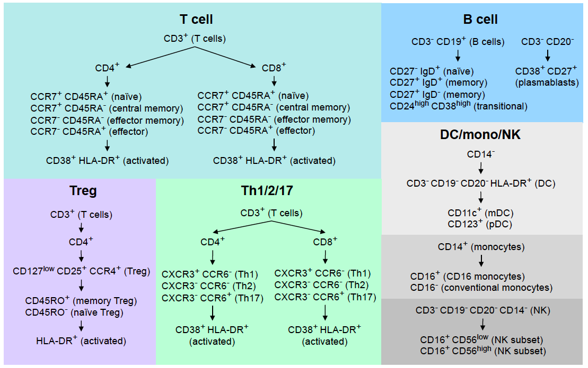
Figure Courtesy of H. Maecker
T-cells
Naive, memory, plasmablasts, transitional
T regulatory cells
CD4, Treg, memory, naive, activated
Th1 Th2 Th17 cells
CD4/CD8 Th1,2,17, activated
B cells
CD4/CD8 naive, central memory,
effector memory, effector, activated.
Dendritic cells, monocytes, NK cells
DC, mDC, pDC, monocytes, CD16 monocytes, conventional monocytes
The panels leave room for custom markers to identify additional populations of interest.
Data Analysis is a Source of Technical Variability
- Different people performing gating produce different results.
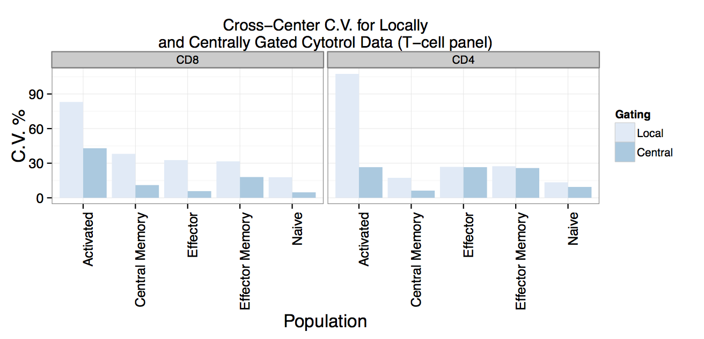
- also compensation, transformation, tools and so forth.
History of the FlowCAP Workshops
FLowCAP: Critical Assessment of Cell Population Identification Methods
Three-year old series of workshops for benchmarking automated gating methods.
Aiming for objective comparison of automated gating algorithms.
FlowCAP I and II
Challenges focused on high dimensional automated gating (discovery).
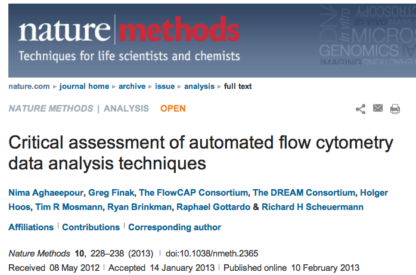
FlowCAP III
Focus on reproducibility, applicability to clinical trials.
- Lyoplate Challenge: Reproduce centralized manual gates.
- Identify methods with minimum bias and low variability.
FlowCAP III: Lyoplate Standardized Gating
Identify Gating Methods with low variability and bias relative to centralized manual gating
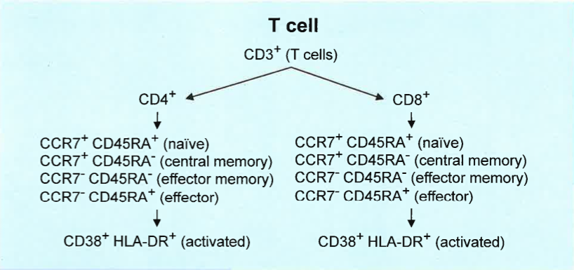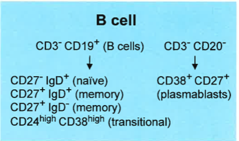
- FlowCAP III Lyoplate challenge focused on the T-cell and B-cell panels.
- 9 sites, 4 replicates of cryopreserved cells per site.
- Centralized gating of data based on a consensus "best" approach amongst the 9 centers.
- Automated algorithms were compared against the centralized gating.
Why Compare Against Manual Gating?
In clinical trials, the things we want to measure are well defined a-priori.
- Flow assays are well defined.
- Cell populations of interest are well defined.
- No immediate need to apply high-dimensional gating for "discovery".
- Such approaches are suitable for analysis of secondary endpoints.
Large data sets.
- Gating is tedious and subject to human error (this has been shown over and over).
- We want to automate the repetitive tasks. Make them:
- Robust and Reproducible
Automated Gating Methods Should Perform At Least as Well as Centralized Gating
FlowCAP Participants (Lyoplate Challenge)
DENSE ( A. Brandes, Broad Institute )
flowDensity ( J. Taghiyar, BC Cancer Agency )
OpenCyto ( J. Ramey, FHCRC )
emcytom ( K. Wang, University of Queensland )
FLOCK ( R. Stanton, JCVI )
Centralized Gating ( Current best practice )
FlowCAP III Gating Evaluation Criteria
Assess automated methods relative to central manual gating.
- Variability
- Coefficients of variation across centers
- Bias: \(RMSD_{gpc} = \sqrt{\frac{\sum(y_{gcpr}-\mu_{mpc})}{R}}\)
- Mixed Effects Model:
\(y_{gpcr}=\mu+\phi_{p}+\color{red}{\gamma_{g}}+\color{red}{\phi\gamma_{pg}}+(\phi\chi)_{pc}+\epsilon_{gpcr}\)
- Fixed gating and cell population effects.
- Random center \(\times\) cell population effects.
- Interested in interaction and contrasts of fixed effects. \((\gamma_g + \phi\gamma_pg -\gamma_0 - \phi\gamma_{p0} = 0)\)
An ideal automated gating method will have low bias and low variability for each population.
Centralized Gating of the B-cell panel
flowWorkspace: Import Manually Gated Data from flowJo
http://www.github.com/RGLab/flowWorkspace (Bioconductor)
Reproduce FlowJo gating in R from an exported workspace.
ws<-openWorkspace("./Data/Centralized T-cell.xml");
G<-parseWorkspace(ws);
plotGate(G[[1]]); #Plot all B-cell manual gates
- Extract manual gates, population statistics and compare against automated gating.
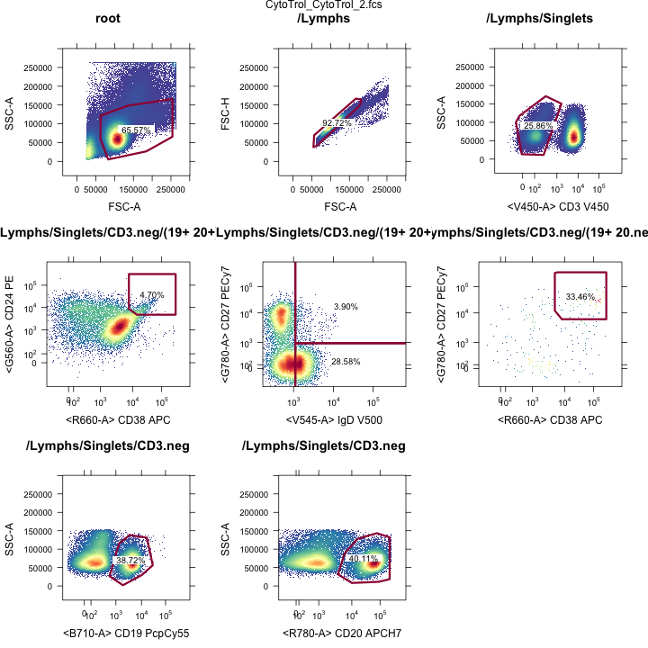
B-cell Panel Variability
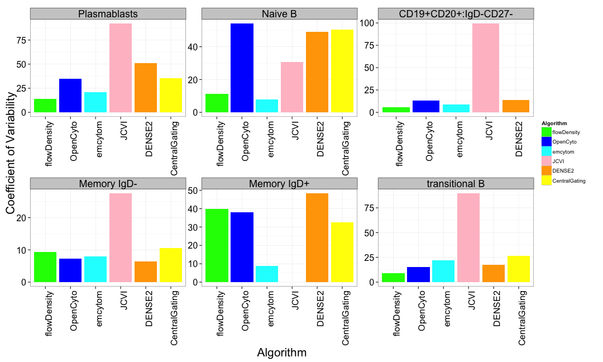
Cross center variability of automated gating methods is comparable to centralized gating.
T-cell Panel Variability
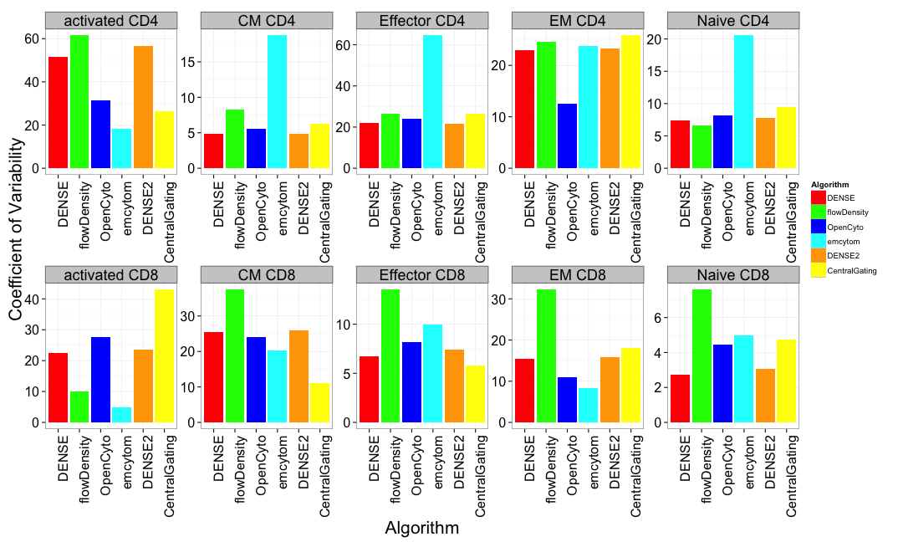
At least one method per panel matches the variability of centralized gating for all populations.
B-cell Panel Bias

Three methods provided unbiased cell population estimates for the B-cell panel.
T-cell Panel Bias
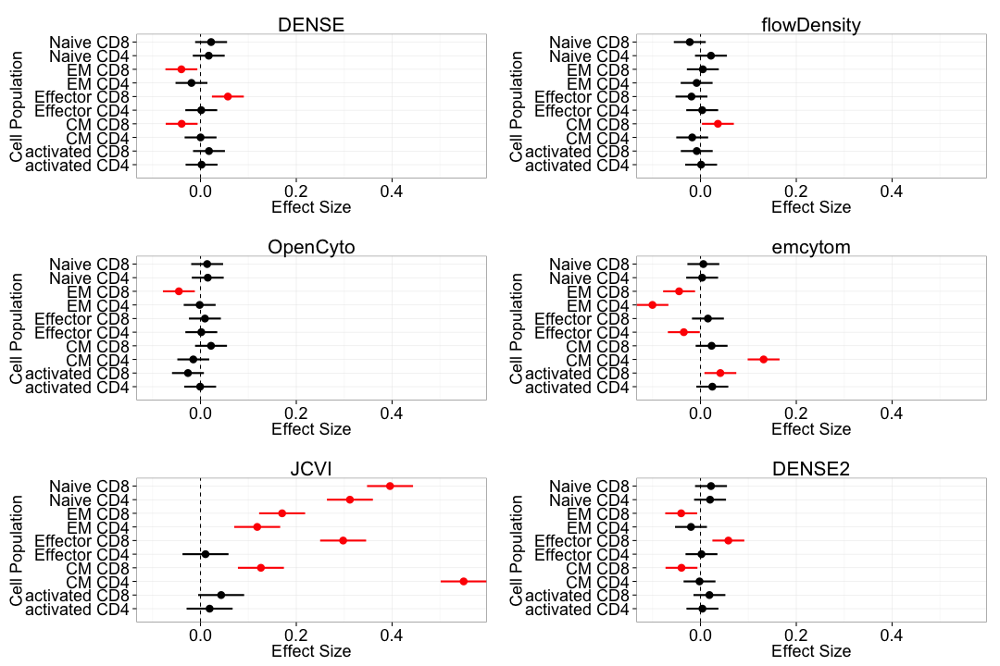
Three methods were mostly unbiased, having difficulty with some rare or poorly resolved cell populations.
OpenCyto Framework: Construct flexible gating pipelines
Goal: Make the best algorithms available for use.
http://www.github.com/RGLab/openCyto
Integrates core R flow infrastructure with automated gating algorithms
(Bayesian flowClust, flowCore, flowDensity, DENSE)
- Modular architecture: plug-in any gating algorithms.
- High-level description of gating schemes
- User defines hierarchy of cell populations and relevant markers
- Higher-dimensional gating (e.g. >2D) is available.
Framework abstracts away most of the R-coding.
OpenCyto: Defining cell populations
Example CSV Gating Template Definition (Lyoplate B-cell Panel)
| Alias | population | parent | dims | method | options |
|---|---|---|---|---|---|
| nonDebris | nonDebris+ | root | FSC-A | flowClust | min=0 |
| singlets | singlets+ | nonDebris | FSCA,FSCH | singletGate | |
| lymph | lymph | singlets | FSCA,SSCA | flowClust | K=3,quantile=0.95,target=c(1e5,5e4) |
| cd3 | cd3- | lymph | cd3 | flowClust | K=3,neg=2 |
| cd19 | cd19+ | CD3 | cd20 | flowClust | K=2 |
| cd20 | cd20+ | CD3 | cd20 | flowClust | K=2 |
| cd19&!cd20 | cd19&!cd20 | cd3 | boolGate | cd19&!cd20 | |
| cd19&cd20 | cd19&cd20 | cd3 | boolGate | cd19&cd20 | |
| transitional | transitional | cd19&cd20 | cd38,cd24 | flowClust | K=5,gate_type='axis',target=c(3.5e3,3.5e3),quantile=0.995,axis_translation=0.35 |
R Code to Run the Gating
template<-gatingTemplate("bcellTemplate.csv")
fs<-readFlowSet(file="Data/Bcells/")
gs<-GatingSet(fs)
G<-gating(template,gs)
OpenCyto Framework: Automated Gates
Makes complex algorithms easy to use.
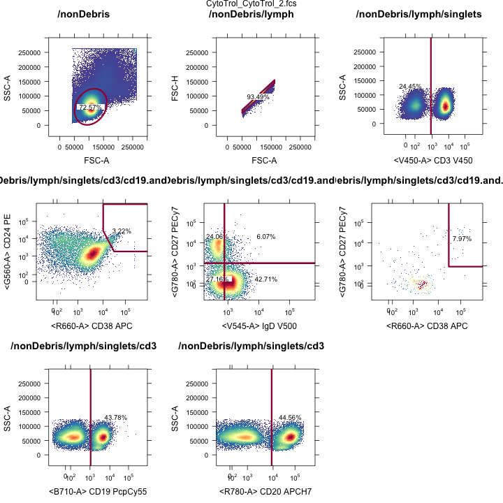
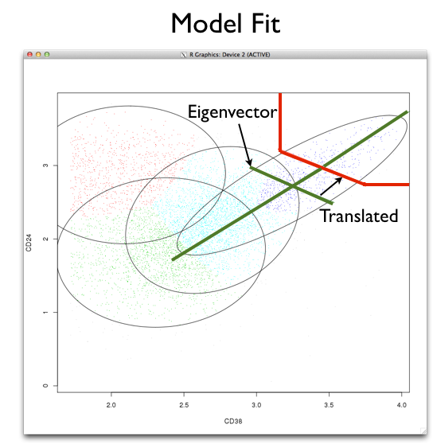
Acknowledgements
FlowCAP
Lyoplate Data
Holden Maecker (Stanford)
Phil McCoy (NHLBI)
FOCIS and HIPC consortia
Participating Centers
FlowCAP Coordinating Committee
Raphael Gottardo (FHCRC)
Ryan Brinkman (BCCA)
Richard Scheuermann (JCVI)
Tim Mossman (U Rochester)
Nima Aghaeepour (Stanford, BCCA)
Thanks to all FlowCAP
Participants
NIH and NIAID
R Flow Tools
Bioconductor Flow Package Contributors
FHCRC
Raphael Gottardo
Mike Jiang
John Ramey
BCCA
Ryan Brinkman
Nima Aghaeepour
Jafar Taghiyar
TreeStar
Adam Triester
Jay Almarode
Take Home Messages
There are automated gating algorithms that are sufficiently robust to be useful for data analysis today.
- DENSE (Broad Institute), flowDensity (BCCA), OpenCyto (FHCRC)
The tools are available to make them practical to use for your data.
Get these slides online: http://www.github.com/gfinak/Talks/LyoplateFlowCAP3